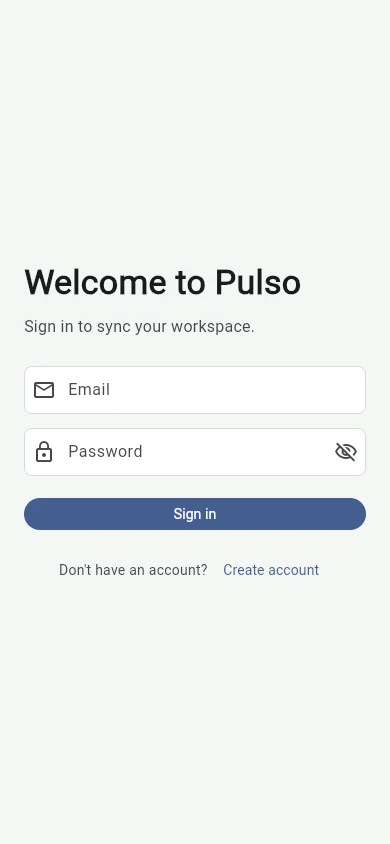
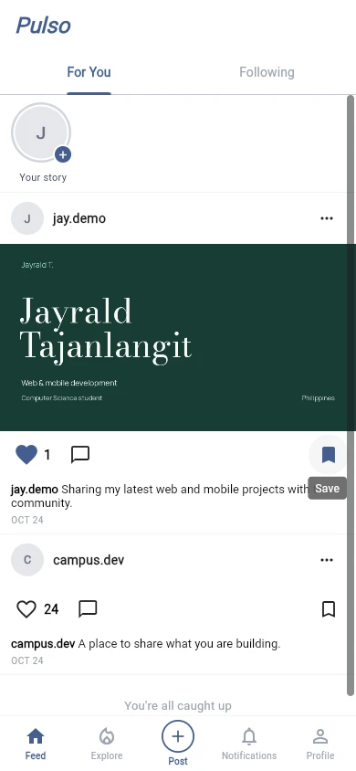
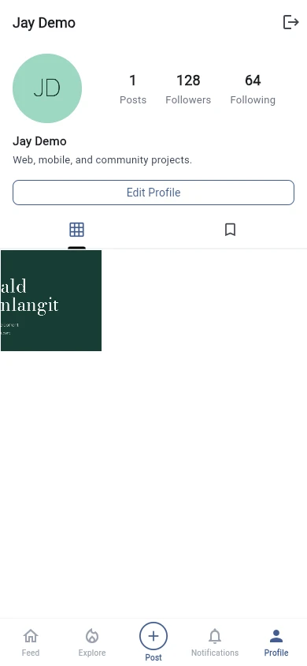

Project / Case study
Pulso
A Flutter community app with account access, image posts, reactions, saved content, and personalized profiles.
Pulso gives community members a place to share captioned images and keep up with one another. The mobile experience connects account access, posting, likes and bookmarks, and profile editing so members can publish, save, and revisit content in one app.
- Role
- Team project · Mobile and backend development
- Built with
- Flutter · Riverpod · Supabase · Realtime
Project walkthrough

Problem
Give community interactions a responsive mobile experience backed by consistent authentication and realtime state.
A Flutter client uses Riverpod for application state and Supabase for authentication, persisted social data, and realtime changes.
My contribution
Built the Flutter scaffold, Supabase and Riverpod foundation, authentication, and major social, profile, saved-content, and realtime features.
Ownership boundary. Team project; Jayrald established the application foundation and built major social and realtime product features.
Public team repository. Jayrald built the app foundation and major social, profile, saved-content, and realtime features; unreleased direct messages are not presented as shipped.
How it works
-
Flutter interface
Provides sign-in and registration screens, image selection and post previews, the community feed, and profile editing.
-
Riverpod state
Coordinates the session, pending post images, reactions, bookmarks, and profile updates.
-
Supabase services
Provides authentication, image storage, persisted social data, and realtime changes in the connected app.
-
Profile and saved views
Bring together a member's avatar, name, bio, published image grid, and bookmarked content.
Engineering choices
| Decision | Why | Tradeoff |
|---|---|---|
| Centralize feature state with Riverpod. | Feed, profile, authentication, and saved-content behavior share session and data dependencies. | Providers require deliberate boundaries so feature state does not become globally tangled. |
| Demonstrate image posting and profile editing with isolated sample data. | The real screens can show image selection, publishing, and profile changes without using live community accounts. | This capture demonstrates interface and state changes; live storage and realtime delivery require separate verification. Unreleased direct messages remain omitted. |
In use
Real Flutter screens with isolated in-memory authentication, post, profile, and media storage. The walkthrough previews registration, signs in with a fictional local account, selects an image, publishes and interacts with the post, edits the profile/avatar, and signs out. No real account is registered and no live authentication or community services are contacted.
-
Sign in
Access an account: the walkthrough previews Create account, then returns to sign in with a fictional local demo account. -
Publish to the feed

Publish and interact: the image and caption appear together in the feed, where the member can like and bookmark the new post. -
Update your profile

Personalize the profile: saved edits update the display name, bio, and avatar, while the published image appears in the member's post grid.
Outcome
Members can sign in, publish a captioned image post, interact with the feed, personalize their profile, and sign out.
Evidence. The video opens on sign-in, previews the create-account screen, and signs in with a fictional demo account. It then creates an image post, likes and bookmarks it, updates the name, bio, and avatar, and signs out to the welcome screen.
Current limits. The recording uses real Flutter screens and the browser image picker with isolated in-memory authentication, media storage, and social data. The create-account screen is previewed without registering a real account. Live authentication, email confirmation, uploads, persistence, and realtime delivery are not verified; unreleased direct messages remain outside this case study.